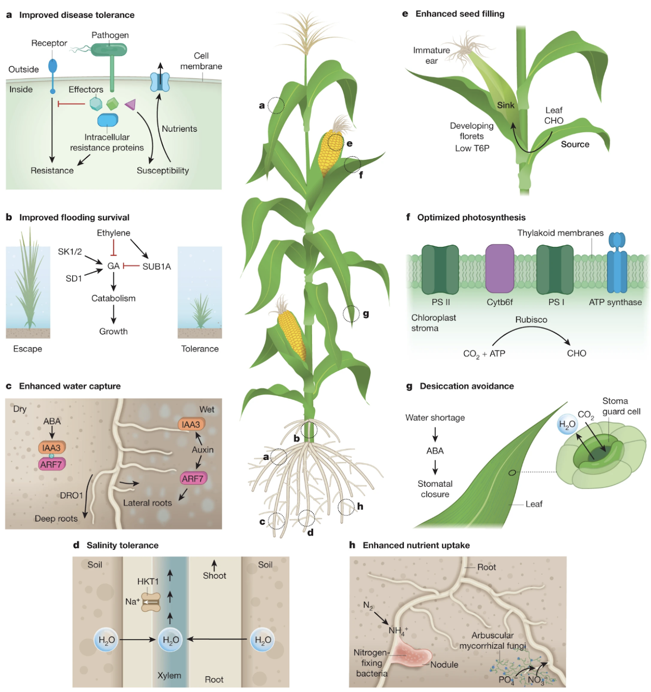

Next generation crops for higher yield
As global demand for food increases, innovations in biotechnology will enable us to produce new crops that can grow dramatically more food on the same land. Breakthroughs, and continued cost declines, in biological platform technologies such as gene sequencing and gene editing will allow scientists to create new crops that boost yields through improved photosynthesis, better disease tolerance, better water capture, improved tolerance to both flooding and drought, and more. These technologies will allow us to more than double crop production on current land, helping to meet the rising demands for more and higher quality food.
Image source: Genetic Strategies for Improving Crop Yields (2019)
For an overview of some of the genetic approaches being considered, read this review of Genetic Strategies for Improving Crop Yields.